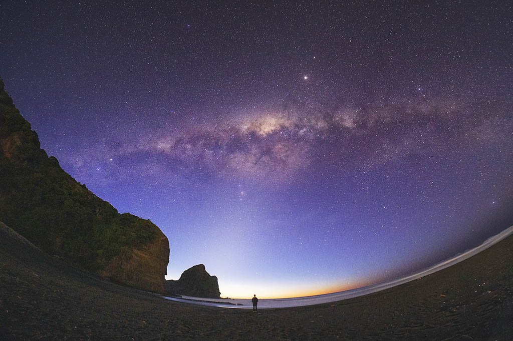

A laid-back seaside village 45 minutes west of Auckland city, Piha is popular with local kiwis - especially in summertime. The dramatic beach, which is marked at each end by rugged cliffs, is a popular surfing location. The water has strong and often dangerous currents. However, in summer, surf lifesavers patrol an area clearly flagged for swimmers.
You can take surfing lessons or try abseiling down the Piha canyon. Bring a picnic or visit the beachside surf club for a bite to eat.
In terms of accommodation, there are cottages and caravans for rent, a campground and a B&B home stay. It's also possible to rent private beach houses. Remember to book ahead, especially during summertime which is high season.

Things I love about Piha
Black sand, burns your feet in summer, dries to a crunchy biscuit crust, piles up in the crutch of your togs, gets everywhere.

Surf! Sounds like a war going on out there in the night – pounding cannons, rifle cracks, explosions.
Benign days. Turquoise, glistening sea. Heat vibrating off the beach. Chips, milkshakes, sun umbrellas.
Cool nights, dark mysterious bush, the milky way you can almost touch it.
Sunsets, orange, pink, red, purple, the green flash, ever seen it?
 Contact me
Contact me